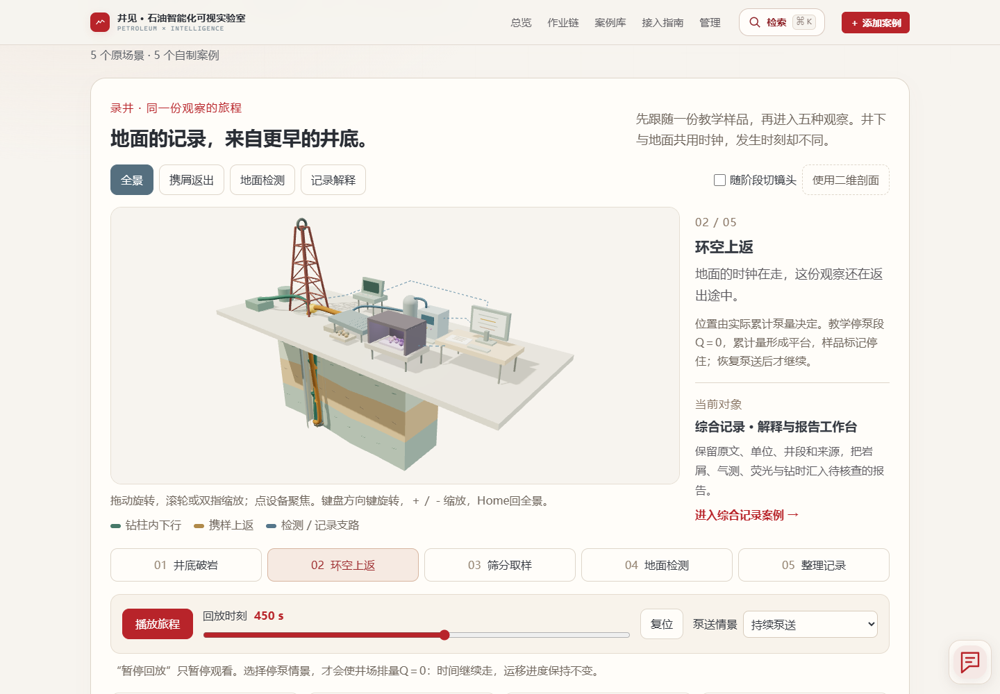
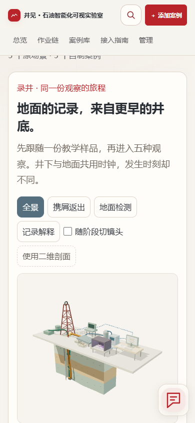
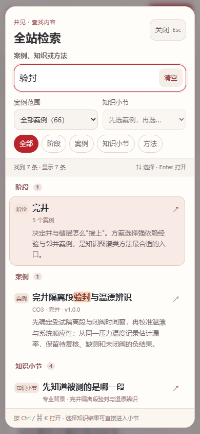
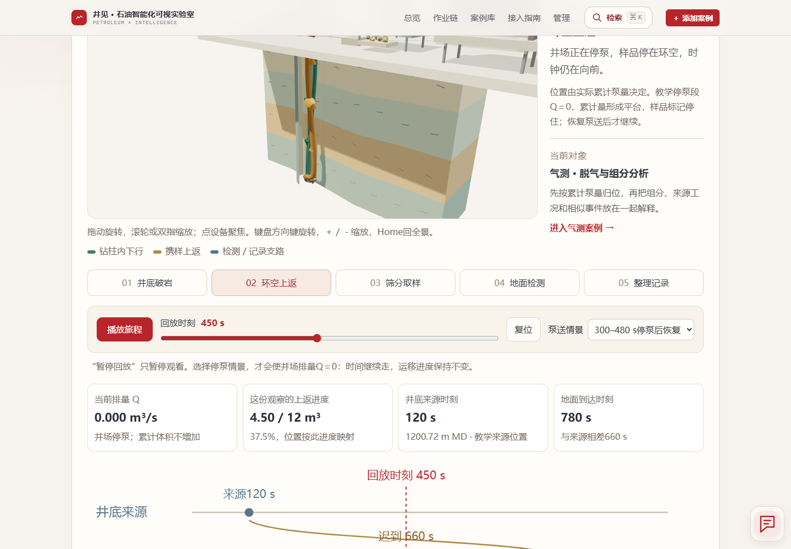
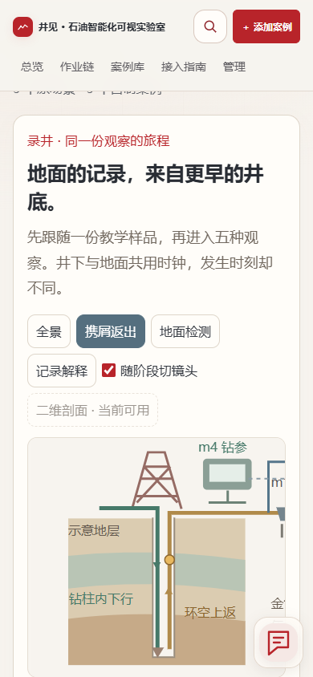
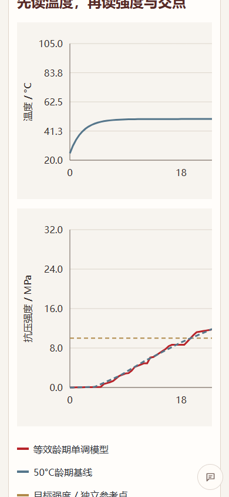

65例 · 录井3D与知识检索
13阶段，61个原场景；老师样例另计。当前源码检查1167/0，实际浏览器331/0；完整范围与未触发条件分别记录。
打开录井专题 · 阅读验收说明 · 四例16路径和20份结果

site-upgrade-3d-desktop.png

site-upgrade-3d-mobile.png

site-upgrade-search-mobile.png

site-upgrade-offline-3d.png

site-upgrade-2d-fallback-mobile.png

site-upgrade-variants-c1-mobile-ui01-fixed.png
验收边界
No full 65-case browser all-path claim: four new cases received 16 paths; old five and two other cases received targeted enhanced-portal regression.
Source checks, numerical checks, original-portal import, offline file tests and timing measurements are separate evidence.
The two originally strict timing thresholds remain not met in the frozen five-run experiment. The user explicitly relaxed timing requirements.
In this automation environment document.hidden stayed false even with a second headed tab. Inactive-tab frame/time values stopped in Chrome, but the visibilitychange branch was not exercised; offscreen stopping and route disposal passed actual browser checks.
Forced WebGL-unavailable fallback was checked by an explicit getContext failure injection, separate from normal working 3D.